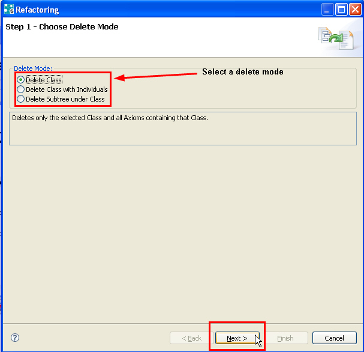
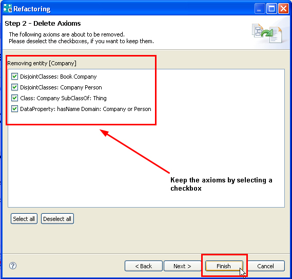

If you want to delete a resource such as a class (object property, data property, etc.) from the ontology, you can use the Delete dialog which guides you through the process. For example, if you want to delete a class, three options are available:

However, the axioms are not removed immediately. For every single axiom, you can still decide whether you want to remove or keep it. In the next step of the Delete dialog you are prompted to specify which axioms you want to keep.

Sometimes it is even necessary to add new axioms to not change the semantics of the ontology. For example, suppose you have an axiom stating that classes A, B and C are equivalent and you want to remove the information that A and B are equivalent. By simply removing the axiom you would also loose the information that A and C are equivalent as well as that B and C are equivalent. Therefore, you have to re-add those two axioms. This is realized in the third step of the Delete dialog.